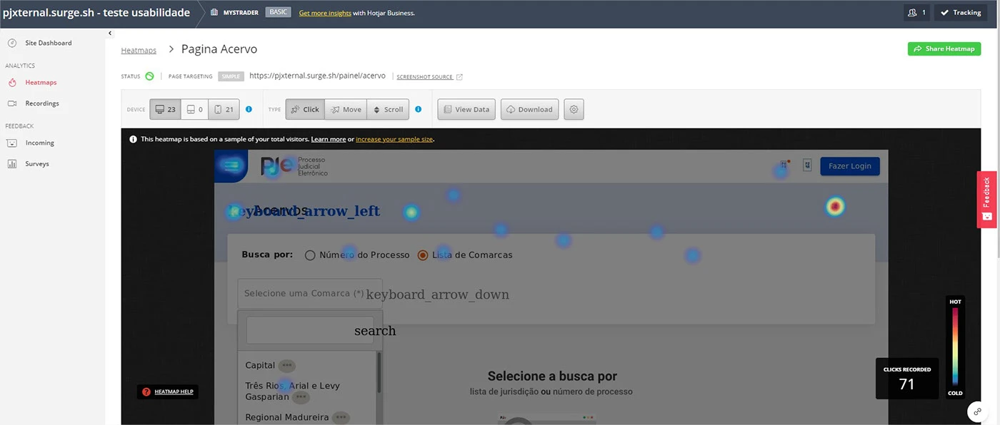

Tribunal de Justiça do Rio de Janeiro — sistemas públicos de alta criticidade
Atuação no TJRJ via parceiro, desenvolvendo o PJe (Processo Judicial Eletrônico). Sistemas sem margem de erro, usados por magistrados, advogados e servidores em todo o estado do Rio de Janeiro.
Paralelamente, atuação na Extreme Digital liderando biblioteca de componentes e plataforma de saúde digital nacional de alto volume — dois contextos distintos que exigiram adaptação constante de ritmo e exigência.
Do design à arquitetura — usuário no centro do processo
No PJe, participei da concepção do sistema, estruturando fluxos e criando a base visual que orientou equipes inteiras de desenvolvimento. Atuação com Angular, PHP (PoC) e JavaScript vanilla, usando Figma para design e arquitetura limpa como diretriz técnica.
Na Extreme Digital, foco em microfrontends, Design System e GraphQL para uma plataforma de saúde com exigências severas de performance e acessibilidade.
Fluxo — Whimsical
Walkthrough no Loom
Apresentação em vídeo complementar ao diagrama — contexto PJe e TJRJ.
PJe — usuário externo (TJRJ)

Cases publicados
PJe — Portal do Usuário Externo
Portal judicial eletrônico do TJRJ — concepção de UX, arquitetura de interface e Design System orientando o desenvolvimento de múltiplas equipes.
Ver no BehanceDemo online — usuário externo
Protótipo do portal ainda publicado (Surge): referência de fluxos e interface para consulta.
Abrir pjxternal.surge.sh